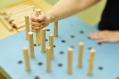
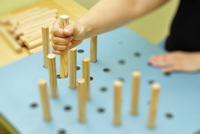

Ergotherapie bei Kindern und Erwachsenen
Offenkundige Probleme haben meist verborgene Ursachen.
Daher steht in der Behandlung mit Kindern am Anfang eine
vielschichtige und individuelle Befunderhebung, die sich über
mehrere Therapieeinheiten erstrecken kann.
Erst danach erfolgt die exakt auf den jungen Patienten abgestimmte
Therapie. Durch den gezielten Einsatz spielerischer
Elemente lernt Ihr Kind, Defizite auszugleichen und eigene
Fähigkeiten zu verbessern.
Die Anwendungsbereiche erstrecken sich von Entwicklungrückständen
und Behinderungen über Wahrnehmungsverarbeitungsstörungen,
Schul- und Lernproblemen, AD(H)S, bis zu
Verhaltensauffälligkeiten.
Im Mittelpunkt der Erwachsenen-Therapie steht die Wiederherstellung
der Selbstständigkeit im Alltag etwa durch
Beweglichkeitsübungen zur Kräftigung oder Koordination. Oder
das Üben und (Wieder-) Erlernen ganz alltäglicher Dinge wie
selbstständiges An- und Ausziehen. Auch ein gezieltes Gedächtnistraining
zur Verbesserung von Orientierung und Merkfähigkeit
hilft gerade älteren Menschen, sich wieder besser zu recht zu
finden. Wir zeigen Ihnen, wie Sie mit einfachen Hilfsmitteln
Ihren Alltag ganz alleine „in den Griff kriegen“.
Die Anwendungsbereiche erstrecken sich in der Orthopädie von
Handverletzungen, Rheuma, traumatischen und degenerativen
Störungen, bis zu neurologischen Erkrankungen, wie z.B. Schlaganfall,
Multiple Sklerose, Morbus Parkinson, Traumen des Nervensystems
und senile Altersdemenz.
 

{kind=link}

Lassen Sie sich gut behandeln
In der Regel werden Sie oder Ihr Kind von Anfang bis zum Ende der Therapie von ein und demselben Therapeuten behandelt. Dieser kennt Ihre „Geschichte“ und den jeweiligen Behandlungsstatus am besten.
In der Gemeinschaft von Logopädie und Ergotherapie ist es uns möglich, Patienten in enger Zusammenarbeit beider Tätigkeitsbereiche umfassend und qualitativ sehr hochwertig zu therapieren. Vor allem ist uns das Gespräch mit Eltern und Betreuungspersonen wichtig. Nur so können wir sicherstellen, dass die erlernten Übungen in den Alltag integriert und langfristige Erfolge erzielt werden.
Für einen optimalen Therapieerfolg bilden wir uns regelmäßig weiter. So erweitern wir unser Fachwissen mit bewährten Therapiekonzepten und modernen, fundierten Erkenntnissen und Methoden.
Wir bieten Ihnen außerdem ein umfangreiches Kurs- und Trainingsangebot an, welches Sie auch ohne Verordnung nutzen können:
- • Konzentrations- und Lernprogramme
- • Nachhilfe für Schulkinder durch unsere Sozialpädagogische Fachkraft
- • Feinmotorik- und Bewegungskurse
- • Musikalische Früherziehung zur Sprachförderung und Körperwahrnehmung
- • Shiatsu (Entspannungsmethode)